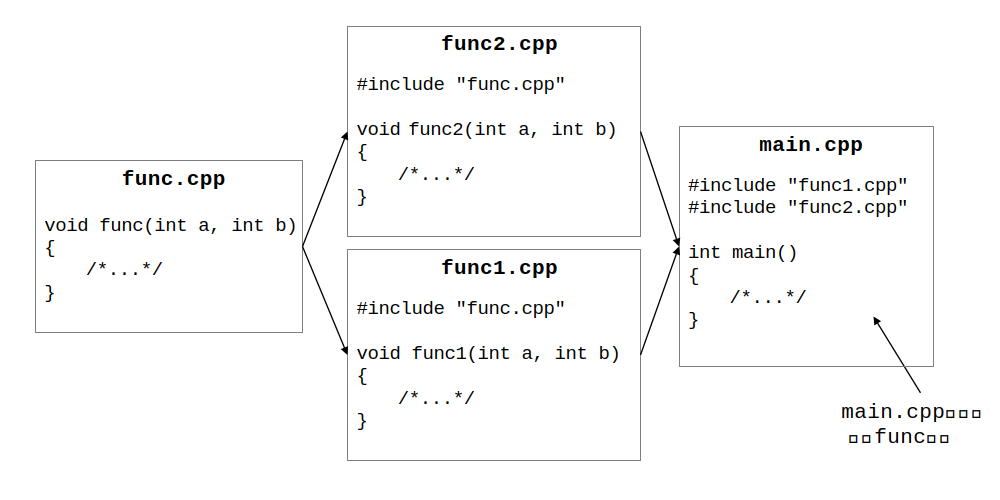

C/C++ 多文件编程入门
引入
最开始，我们通常在一个C/C++源代码文件里写下所有需要的代码；当要写一个新的文件要使用之前写好的功能的时候，就把之前的代码复制过来。
但是随着写的程序变得多、变得复杂，每次需要从更多的地方复制更多代码，而且代码文件的长度也越来越长，给维护和阅读都带来一定的麻烦；更重要的是，如果想要修改某一特定功能，那么所复制了这段源代码的地方都需要重新修改。
也会增加不必要的编译时间，单文件修改一个地方，其他的所有地方也不得不重新编译；重复的功能在每一个文件里都需要重新编译）
所以我们需要寻找一种方法来避免重复的代码。
预处理指令include
在编译代码之前，编译器会先对代码文件进行预处理，这些命令通常以#开始。其中include命令就意味着把相应的文件内容复制到当前文件里。include指令在搜索文件时有一定的顺序，这里暂时不过多展开。
重复定义 multiple definition
看似我们只需要将各个功能的代码写好放在不同的文件里，使用的时候再include对应的文件就好了，比如像下图这样：

这样的想法在只有一层包含关系时一般不会出现问题，但是一旦包含关系不止一层，就可能会出现同一个函数出现多次的重复定义问题，比如下图所示的场景就会导致main.cpp中会有两个func函数：

可以使用ifndef指令避免文件被包含多次（还会在后面的头文件保护用到），但是这种解决方法治标不治本，本质上还是把代码复制了一遍——虽然代码文件看起来简单了，但是每修改一个小地方还是会重新编译其他没有改变的部分，造成不必要的时间和资源浪费。
链接、接口、头文件和源文件
那我们想要在程序中调用其他写好的内容具体应该怎么做呢？
把写好的每一个功能想成一个个组件，那么一个程序就是由一个个组件拼接而成，所以我们只需要将每一个组件准备好，最后就进行一个拼接的操作即可。
可以想象成烧好了不同形状的砖块，盖房子的时候直接拿去用就好。
比如想用func函数，只需要在当前文件中该函数的调用处之前能够找到func函数的声明，也就是这个函数的接口（可以理解为函数名 + 参数类型），就能够通过编译。
而在编译之后的链接阶段，编译器就会去寻找对应的函数定义，如果找到了就没有问题，没找到就会出现“Undefined Reference”的错误。

当一系列函数（还有比如结构体、类的声明，模板等）的声明比较多时，我们可以把这些声明单独拿出来放在一个文件里，像一个清单一样，称之为头文件（headers）；对于这些函数的实现则放在另一个文件里，也就是源代码文件（source files）。
因此，当别的程序需要使用对应的功能的时候，直接include需要的“清单”即可。
下面是一个使用头文件存储声明的简单的例子：
两个cpp文件都能正常通过编译生成目标文件funcs.o、main.o，最后需要将编译产生的目标文件链接在一起，生成最后的可执行程序main
头文件保护
但是，还需要避免出现多次声明的问题，因此要确保头文件只被包含一次，一般使用条件编译指令，如图所示：

头文件中不能包含函数定义，虽然头文件保护过后只会被包含/复制一次，但当一个头文件被多个源文件包含时，在最后的链接步骤就会出现重复定义的错误。
头文件中应该包含什么内容？
根据上一节的内容，头文件中不应含有函数定义。但是可以有内联函数，因为内联函数在编译时会被插入到相应位置。
总结一下，大概有这些内容可以出现在头文件中：
- 函数原型
- 使用#define或const定义的符号常量
- 结构体 / 类声明
- 模板
- 内联函数
#include "" 和 <>的区别
使用双引号""时，编译器首先查找当前工作目录或源代码目录，然后再在标准位置查找。
使用尖括号<>时，编译器将在系统的头文件目录中查找。
构建工程
补充阅读：
- http://c.biancheng.net/view/7672.html